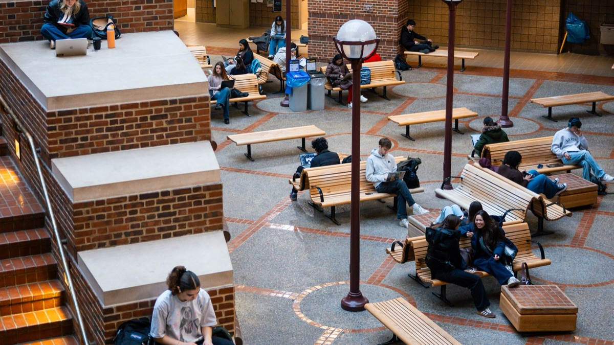

Initial Client Email Examples
Plug-and-play email templates for first contact with clients and partners.

Step 3 of 6
First impressions shape the trajectory of a partnership. The starting phase is where abstract project ideas turn into structured, professional commitments through clear outreach, productive kickoff meetings, and shared scope agreements.
Need to review preparation steps first? Return to Preparing for Your Experience.
By establishing clear team contracts, co-creating agendas, and aligning on project scope early, you build psychological safety within your team and trust with your client.
When you ground your project in mutual respect, clear boundaries, and honest communication from Day 1, you transform a simple class deliverable into a reciprocal partnership. Learning how to navigate early ambiguity is one of the most valuable professional capabilities you will gain at UMSI.
Plug-and-play email templates for first contact with clients and partners.
Step-by-step structure for running a professional kickoff call.
Principles for building reciprocal, respectful community relationships.
Standard guidelines for managing expectations and deliverables.
Formal contract establishing roles between student teams and ELO.
Overview of key milestones, deadlines, and submission dates.